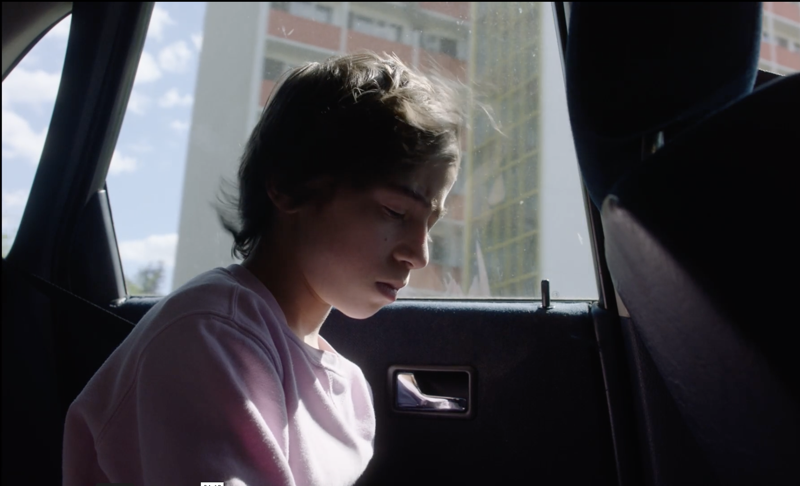
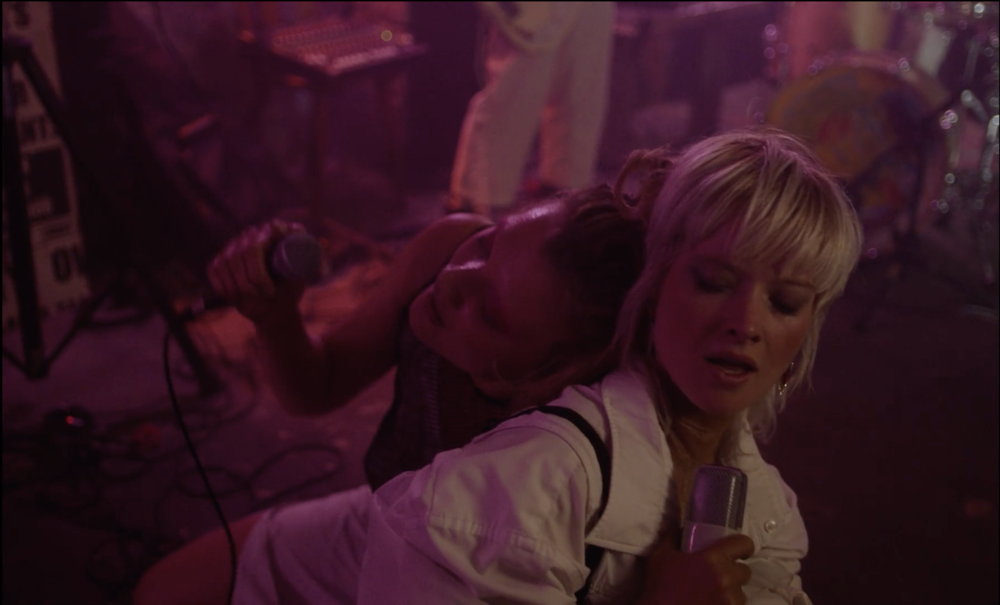

A drama series created in collaboration with The German Film and Television Academy Berlin (DFFB).
It tells the story of Mavi and Roya.
MAVI (she/her, 27) a young social worker living in Berlin is overwhelmed by her everyday life that is defined by the responsibilities she carries in her job and private life. She lives with her sister who suffers a severe health condition. At a concert she meets Roya (they/them, 28) and is immediately fascinated by the seemingly endless freedom they walk through life with. Inspired by Roya, Mavi follows her longing to leave her life in Berlin behind. Accompanied by dissociative episodes, her understanding of space and time starts to dissolve. She gets lost in her own stream of consciousness. Where does Mavi start and the others end? Why is it so hard to let go?

We all know somebody who struggles with their mental health or maybe we are that somebody.
Damaged Lemons is an encouragement to deal with mental health issues in a less ashamed way and to embrace your identity no matter how far it may seem from the status quo. With the story we are telling we want to give hope and heart to everyone who feels pressured by society to "function" in a certain kind of way. We aim to dismantle the myth about mental health and non-binary gender identities. We want to draw attention to the pain societal norms can cause to individuals who don't fit into these fixed norms.

Damaged Lemons is currently still in production.
We have shot Episode 1 and 2 and are looking for collaborators and funding to continue with Episode 3 till 7.

WRITERS:
Sarah Miro Fischer, Naemi Ada
DIRECTOR:
Naemi Ada